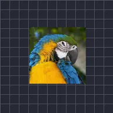

Automatisches Wackeln

Bewegt die Ebene im Laufe der Zeit zufällig innerhalb der festgelegten Grenzen.
Automatisches Schütteln bewegt die Ebene ohne Keyframes immer wieder in zufällige Richtungen. Stärke ist, wie weit sie sich bewegt, Frequenz wie viele Schüttler pro Sekunde, und Winkel die Hauptrichtung. Zufallswert und Entwicklung ändern das Zufallsmuster, und Z-Wackeln fügt Schütteln in der Tiefe hinzu.
- Kamerawackeln: Stärke 15 bis 30, Frequenz 6 bis 10 auf einer Gruppe, die die ganze Szene enthält.
- Einschlag: Animiere die Stärke von einem großen Wert auf 0 in einer halben Sekunde.
- Füge danach Bewegungsunschärfe hinzu, um das Schütteln so zu verwischen, wie es eine Kamera tun würde.
Einstellungen
| Einstellung | Typ | Bereich | Standard |
|---|---|---|---|
| Stärke | Zahl | 0 bis 2000 | 50 |
| Frequenz | Zahl | 0 Hz bis 16 Hz | 2 Hz |
| Entwicklung | Zahl | 0 bis 2000 | 0 |
| Zufallswert | Zahl | 0 bis 5 | 0 |
| Winkel | Winkel | -3600° bis 3600° | 45° |
| Spiel | Zahl | 0% bis 100% | 25% |
| Z-Wackeln | Zahl | 0 bis 2000 | 0 |
| Muster | Auswahl | Klassisch, Standard | Standard |